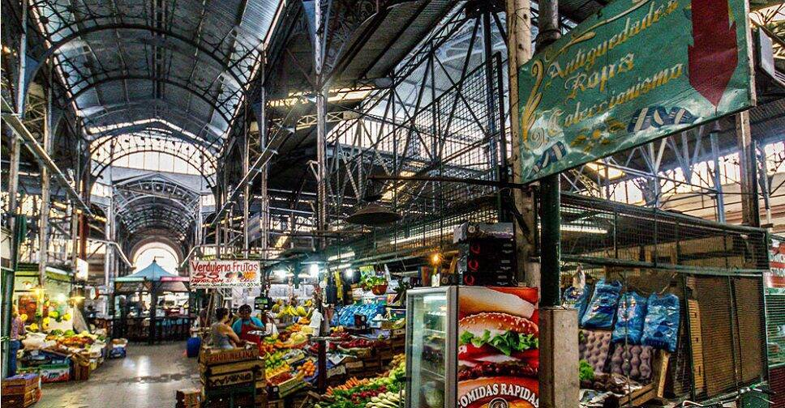
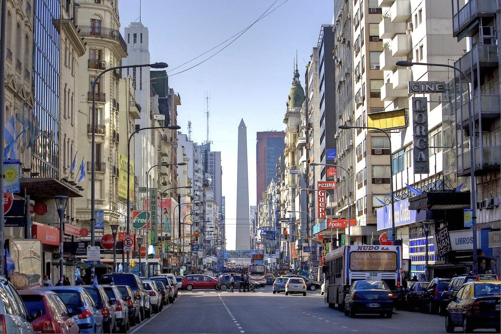

La Ciudad
Buenos Aires es una ciudad con una rica historia, una gran diversidad cultural y un entorno natural único.

Características principales
- Ciudad cosmopolita y diversa.
- Importante centro cultural y artístico.
- Amplia oferta gastronómica.
- Espacios verdes y vida al aire libre.
- Tradición, historia y modernidad.